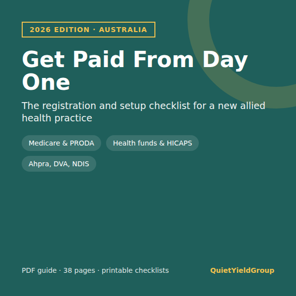
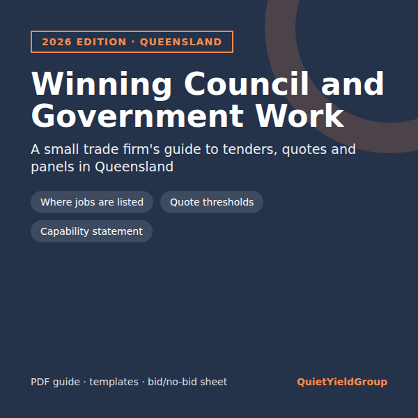
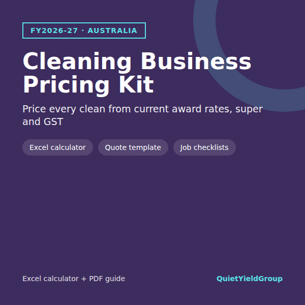
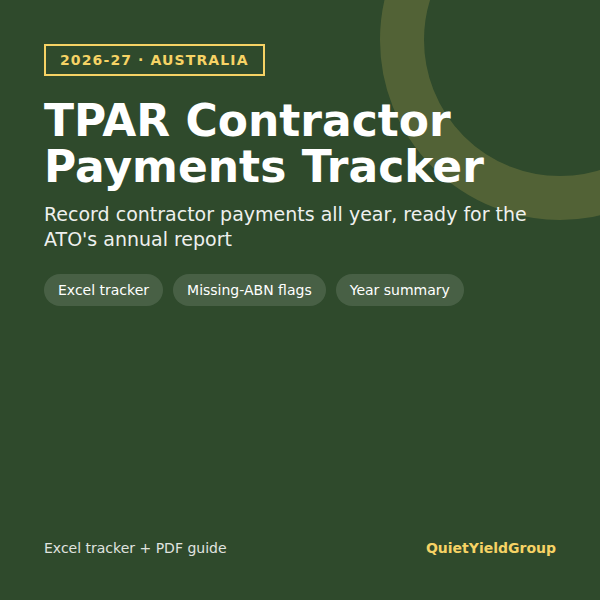
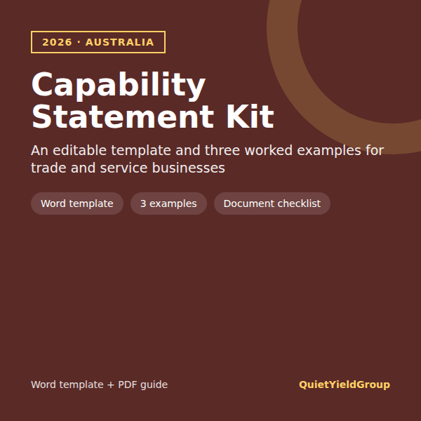
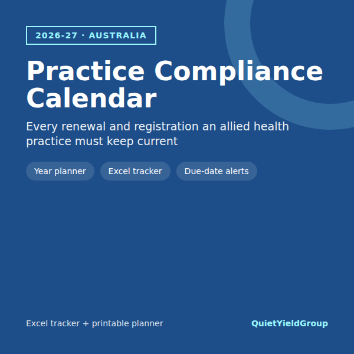
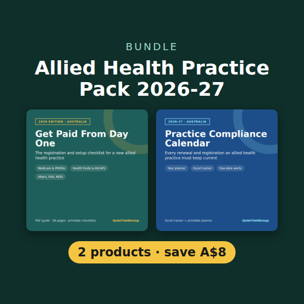
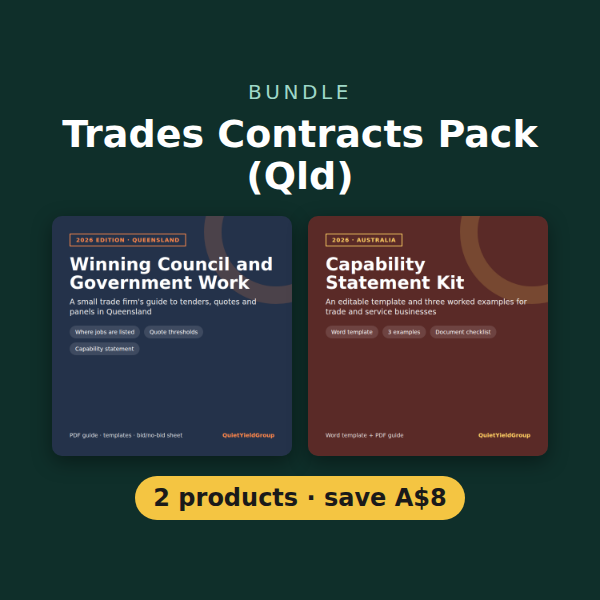

Checklists, templates and calculators built from official sources and dated, so you know what's current. Every guide has a free preview.

The registration and setup checklist for a new Australian allied health practice. 2026 edition, current as of 17 November 2026.
A$29

Where Queensland public jobs are listed, how council quotes work, and how to get onto panels (2026 edition)
A$24

Price domestic, end-of-lease and office cleans from the 1 July 2026 Cleaning Services Award rates, 12% super and GST: Excel calculator, quote template and checklists.
A$35

Record contractor payments through the year in the form the ATO's Taxable payments annual report asks for, with a whole-dollar total for each contractor.
A$15

Editable one- and two-page Word template, a short guide and three filled-in examples for council, government and commercial work
A$15

A printable year planner and spreadsheet tracker for the renewals, registrations and recurring dates a small allied health practice has to keep current.
A$12

Setup checklist + compliance calendar. A$41 separately.
A$33

Council work guide + capability statement kit. A$39 separately.
A$31
Launch offer: 25% off everything with code LAUNCH25 until 30 November 2026.